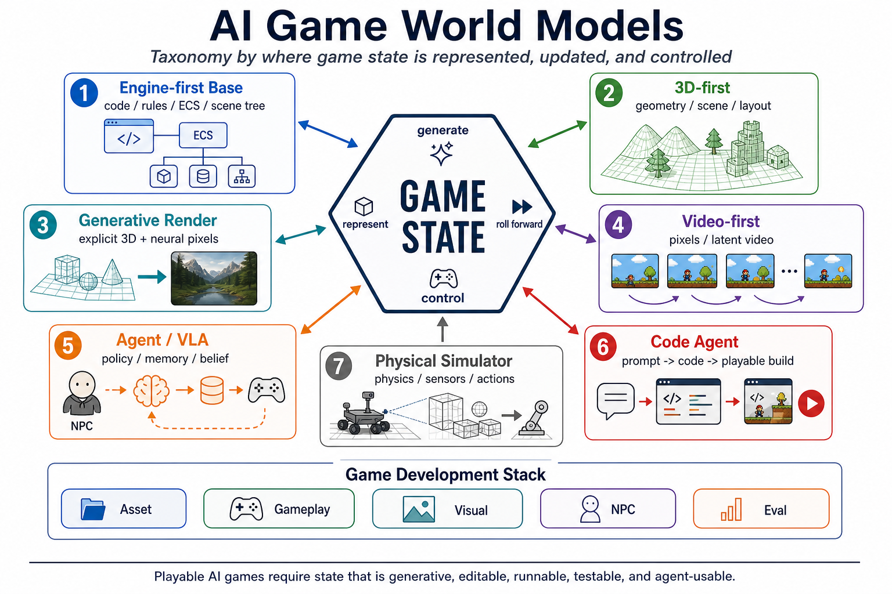

AI Game Notes
AI Game World Models：游戏状态应该放在哪里
这篇是对我的 AI Game World Models v2 笔记的扩展版。核心问题不是“谁能生成更好看的画面”， 而是一个 AI 游戏世界的状态应该被表示在哪里、由谁推进、怎么控制、如何评测，以及怎样变成可发布的产品栈。
核心命题
传统游戏引擎把状态放在 code、rules、ECS、scene tree、physics、animation graph、 render pipeline、networking 和 persistence 里。AI Game 的新路线把一部分状态迁移到 3D 表示、 神经渲染、视频 latent、agent memory/belief、代码生成工具，或者物理仿真器里。
所以，Game World Model 不是普通 PCG，也不是 RL 里的 narrow-domain dynamics model。 它既要服务内容生成，也要服务运行时交互。一个游戏世界必须可生成、可编辑、可运行、可回放、 可调试、可联网、可评测，并且能被玩家或 agent 使用。

AI Game 的主战场不是 one-shot content generation，而是 state contract。谁能把世界状态定义成既可生成、 可编辑、可执行、可验证，又能被 agent 使用的接口，谁更接近真正的 AI-native game stack。
先划边界：它和三个相邻方向不同
| 方向 | 主要问题 | 和 AI Game World Model 的区别 |
|---|---|---|
| RL World Model | 给 agent 预测未来、奖励和可规划 latent dynamics | 偏 agent training，不一定关心编辑器、资产管线、多人同步、存档和创作者工具。 |
| PCG / PCGML | 生成关卡、地图、剧情、卡牌、道具或规则 | 偏内容生成；AI Game World Model 还要处理运行时状态推进和玩家交互。 |
| Video Generation | 生成连续视觉帧，可能带动作条件 | 视觉连续不等于可玩。游戏还需要 hitbox、inventory、quest flag、server authority 和 replay trace。 |
七条路线：state 放在哪里
| 路线 | 主要状态 | 代表系统 | 最适合做什么 | 主要瓶颈 |
|---|---|---|---|---|
| Engine-first | code / ECS / scene tree / physics | Unreal、Unity、Godot、Roblox、自研引擎 | 可发布游戏、多人同步、存档、调试和性能预算 | 内容生产和迭代成本高，AI 原生接口不足 |
| 3D-first | geometry / layout / material / affordance | Tripo、Meshy、Seed3D、Hunyuan3D/HunyuanWorld、Marble、Holodeck、ProcTHOR、Infinigen | 资产、场景、可编辑空间世界、合成数据 | 缺 gameplay semantics、collider、navmesh、interaction tags |
| Generative Render | 显式 3D 状态 + neural pixels | DLSS 5/RTX neural rendering、Roblox Reality、neural VFX、3DGS/NeRF 派生系统 | 在保留引擎控制的同时提升视觉、VFX、LOD 和风格化 | 时序稳定、低延迟、视觉可信度和玩法可读性 |
| Video-first | pixels / latent video / action-conditioned frames | Genie、Genie 2/3、GameNGen、Oasis、GameCraft、MatrixGame、LingBot-World、YuME | 快速想象、可交互预览、agent 训练环境、视觉原型 | 隐藏状态难编辑、难 debug、难 replay、难多人权威同步 |
| Agent / VLA | policy / memory / belief / goal | SIMA、Voyager、MineDojo、VPT、Generative Agents | NPC、队友、对手、playtester、game director、社交留存 | 可靠性、可控性、长期记忆污染、评测和安全边界 |
| Code Agent | prompt / code / tool state / engine API | OpenGame、Astrocade、Loopit、Aippy、Moonlake、Unity/Godot/Roblox coding agents | UGC、原型、玩法 glue code、自动修 bug、批量接线 | 跨文件一致性、运行时验证、玩法原创性和工程质量 |
| Physical Simulator | physical state / sensors / actions / dynamics | NVIDIA Cosmos、Genesis、Waymo world models、LucidSim | 物理 AI、机器人、自动驾驶、可控合成数据 | 物理精度、传感器真实性、contact dynamics、sim-to-real gap |
开发栈视角：不是所有生成都在同一层
把 AI Game 拆成 development stack 后，很多混乱会消失。Asset、Layout、Interaction、Gameplay、 Visual、NPC 和 Eval 需要的模型能力不同，评测也不同。Quest/Narrative 和 Balance 尤其不应该当成 “生成一段文本”这么简单，它们本质上是闭环优化问题。
| 层 | 生成模块 | 必须评测什么 |
|---|---|---|
| Asset | 3D 资产、材质、纹理、rig、animation、VFX、audio、affordance | 几何合法性、碰撞、骨骼、LOD、风格一致性、可交互标签 |
| Layout | 场景、关卡、spawn、路径、遮挡、节奏点 | 可达性、导航、pacing、视线、性能预算、关卡目标覆盖 |
| Interaction | 事件图、action schema、trigger、UI feedback、技能系统 | 事件正确性、延迟、状态一致性、可 exploit 性、联机同步 |
| Gameplay | 规则、数值、奖励、资源循环、任务系统、game code | playability、replayability、emergent strategy、难度曲线 |
| Visual | neural render、lighting、frame gen、VFX、style transfer | 时序稳定、可读性、关键帧可信、视觉 artifact、成本 |
| NPC | LLM agent、VLA、RL policy、memory/retrieval、social planning | 可控性、可信感、长期一致性、安全、留存影响 |
| Eval | QA agent、playtest agent、balance optimizer、economy simulator | 公平性、counterplay、经济稳定、剧情连贯、性能和复现 |
横向比较：不要用同一把尺子量所有路线
这些路线经常被混在一起讨论，但它们解决的生产问题不同。Engine-first 和 Code Agent 更接近今天能发布的游戏； 3D-first 和 Generative Render 更接近资产和画面生产；Video-first 更像想象和预览机器；Agent/VLA 则把世界从 “可探索空间”变成“有演员和记忆的社会系统”。
| 判断标准 | Engine-first | 3D-first | Generative Render | Video-first | Agent/VLA | Code Agent |
|---|---|---|---|---|---|---|
| 今天能否跑起来 | 高 | 中，需要工程接线 | 高，如果仍由引擎托管状态 | 中低，适合 demo/preview | 中，取决于任务边界 | 高，小型 UGC/原型很适合 |
| 设计师可编辑性 | 高 | 有 semantic metadata 才高 | 中高 | 低，latent 难直接编辑 | 中，memory/policy 需要工具 | 高，但容易产生工程债 |
| Debug / replay / network | 高 | 中 | 高，只要 gameplay truth 不在像素里 | 低 | 中 | 中高，取决于测试闭环 |
| 视觉上限 | 取决于美术与渲染预算 | 高，但通常还要 art pass | 高 | 高 | 间接影响体验 | 取决于目标引擎 |
| 最佳近期用途 | shipping base | 资产、场景、合成数据 | 视觉质量、性能和风格化 | imagination、pitch、agent 环境 | NPC、playtest、game director | UGC、原型、批量 glue code |
| 核心研究缺口 | AI-native tool API | affordance/state contract | constrained neural pixels | explicit hidden state | 可控长期行为 | 可靠工程质量和玩法评测 |
输入输出地图：从 prompt 到可发布物
另一个实用读法是看每类系统吃什么输入、吐什么输出、离 game build 还差哪一步。这个表适合后续扩成 awesome list 或 benchmark registry。
| 系统类型 | 常见输入 | 常见输出 | 进入游戏前还缺什么 |
|---|---|---|---|
| 3D asset generator | text、single image、multi-view image | mesh、texture、PBR material、sometimes rig | collider、LOD、scale、sockets、animation hook、license metadata |
| 3D world generator | text、image、video、coarse layout、room/scene constraints | scene/world、3DGS、mesh export、camera path、layout | semantic object graph、navmesh、interaction zones、streaming and save schema |
| Neural renderer | explicit scene state、depth/normal/motion、gameplay events | upscaled frame、material detail、lighting、VFX、style | critical-mask constraints、latency budget、artifact guardrail、UI preservation |
| Interactive video world | prompt/image/video、action history、camera/control signal | controllable pixel rollout、visual future、interactive preview | inventory/quest/economy state、debug trace、multiplayer authority、edit API |
| Agent actor | screen/observation、instruction、memory、tool/action schema | NPC action、playtest trace、director intervention、social behavior | bounded policy、memory audit、goal hierarchy、safety and griefing control |
| Game code agent | prompt、repo、engine docs、screenshots、error logs | code patch、scene wiring、browser game、Unity/Godot/Roblox script | regression tests、visual QA、performance profiling、maintainable architecture |
| Physical world model | sensor logs、control signal、scene geometry、trajectory | future video/state、synthetic data、robot/autonomous-driving scenario | metric accuracy、contact realism、domain randomization、sim-to-real validation |
路线 1：Engine-first 不是旧路线，而是底座
对商业游戏来说，硬约束仍然是 deterministic replay、rollback 或 server authority、 collision correctness、save/load、telemetry、profiling、content versioning 和 creator tools。 纯神经路线目前没有替代这些基础设施。Engine-first 的价值在于让 generated content 变成 shippable content。
真正的增量不是“用 AI 替代引擎”，而是把引擎变成 AI-native runtime：开放 scene graph、ECS、asset import、 physics、animation graph、navmesh、profiler 和 test runner 给 agent 调用。引擎保留真状态， AI 负责 proposal、repair、variation、playtest 和 visualization。
loop:
designer_intent = read_prompt_and_constraints()
patch = agent.propose_scene_and_rule_changes(designer_intent)
engine.apply_patch(patch)
trace = engine.run_headless_playtest(seed=42)
report = eval_harness.score(trace)
agent.repair_until(report.build_ok and report.playable)路线 2：3D-first 从 mesh 走向 affordance contract
3D-first 现在至少有三层：object-level asset generation、scene-level layout generation、 world-level reconstruction/generation。Tripo、Meshy、Seed3D、Hunyuan3D 这类系统首先降低 3D asset 生产成本；Holodeck、ProcTHOR 和 Infinigen 更靠近 embodied AI 环境与程序生成；HunyuanWorld/HY-World 把输入扩展到 text、single-view image、multi-view images 和 videos，并生成可探索的 3D/3DGS 世界。 World Labs Marble 则是一个重要产品信号：多模态输入生成可下载、可编辑的 persistent 3D world， 这比“生成一张概念图”更接近游戏制作需要的空间资产。
但 3D-first 不能只盯着 mesh benchmark。游戏真正需要的是 asset-to-entity： 生成结果要能进入 Unity/Unreal/Godot/Roblox/WebGPU 的 entity system，带上 transform hierarchy、 material slots、collider、navmesh、LOD、spawn rules、interaction schema 和 performance budget。 这也是为什么 Moonlake 这类 3D computer-use agent 值得看，它把“生成 3D”往“在 Blender/工具链里可迭代地修改 3D” 推了一步。
但 mesh 不是 game object。一个杯子进入游戏，需要 collider、grab socket、breakability、weight、 sound、inventory tag、LOD、network replication 和 save id。一个门需要 hinge、lock state、key id、 navmesh link、animation event 和 audio cue。没有这些 affordance contract，3D 生成更像概念资产， 还不是可玩的世界状态。


{
"asset_id": "door_oak_017",
"mesh": "door_oak_017.glb",
"colliders": [{"shape": "box", "role": "blocking"}],
"affordances": ["open", "close", "lock", "break"],
"sockets": [{"name": "handle", "type": "grab"}],
"navmesh_links": [{"when": "open", "connects": ["room_a", "room_b"]}],
"state": {"open": false, "locked": true, "key_id": "key_blue"},
"network": {"replicate": ["open", "locked"], "authority": "server"}
}路线 3：Generative Render 是战略桥梁
神经渲染路线不急着替代 game state machine，而是替代引擎里昂贵的视觉部分：超分、帧生成、neural material、 lighting、denoising、VFX、LOD synthesis 和风格化。Roblox Reality 的 hybrid architecture 很有代表性： 核心世界状态仍由 cloud 和 game engine 保存，Video World Model 负责视觉上采样和真实感。
2026 年这条线变得更清晰：NVIDIA 把 DLSS 5/RTX neural rendering 继续推向实时神经像素， Roblox 在 2026-04-29 公开 Roblox Reality，把 Roblox Cloud、Game Engine 和 edge video world model 组合起来做 photorealistic multiplayer 的上采样。它们共同说明一件事：近期最务实的 AI 图形路线不是把整个游戏 放进 latent video，而是保留显式 simulation，再让 neural renderer 负责昂贵、细碎、非玩法真值的视觉细节。
这条路线比 pure video 更接近可发布产品，因为它没有丢掉 multiplayer authority、persistence 和低延迟前景动作。 关键原则是：神经像素可以随机、漂亮、有风格，但不能改变玩法真值。玩家看到的范围、伤害、归属、遮挡、 UI、命中反馈和可交互对象必须和显式状态一致。
event = {
type: "spell_hit",
source_player: "p7",
target_entity: "boss_03",
damage_window_ms: [420, 760],
radius_m: 3.5,
element: "ice",
visibility: "gameplay_critical"
}
vfx = generative_vfx(event, scene_state, style_guide)
assert vfx.never_expands_damage_radius()
assert vfx.preserves_ownership_color()
assert vfx.does_not_hide_required_ui_feedback()路线 4：Video-first 强在想象，弱在暴露状态
Video-first 系统把世界主要表示为 pixels 或 latent video。Genie 从无标签视频里学 action-controllable virtual worlds；Genie 2 生成可被人或 AI 用键鼠操作的 3D 环境；Genie 3 进一步把实时交互推进到 24 fps、720p、几分钟一致性。GameNGen 展示了 diffusion model 模拟 DOOM 风格游戏的可能性； Hunyuan GameCraft、MatrixGame、LingBot-World、YuME 和 Oasis 则推进 Minecraft/开放场景式交互视频。
| 系统 | 状态形式 | 值得注意的点 | 游戏开发风险 |
|---|---|---|---|
| Genie / Genie 2 / Genie 3 | latent video + action | 从视频学可交互世界，支持 prompt 到环境，能用于 agent training/eval。 | action space、长时一致性、多 agent 交互和生产级可控性仍受限。 |
| GameNGen | gameplay frame rollout | 把实时游戏模拟推向 neural engine 叙事。 | 离真实游戏的显式规则、编辑器和多人同步仍远。 |
| Hunyuan GameCraft | hybrid history-conditioned video | 把键鼠输入统一到 camera representation，强调长序列和可控性。 | 更像 playable video preview，不等于完整 gameplay state。 |
| MatrixGame | image-to-world + action-conditioned video | 大规模 Minecraft 数据，提出 GameWorld Score 评测 visual、temporal、control、physics。 | 评测仍偏视频质量和控制，不覆盖完整 game production contract。 |
| Oasis / LingBot-World / YuME | Minecraft-like latent world | 把开放世界视频生成推向更长 rollout、更强交互和更高视觉质量。 | inventory、crafting、server authority、save file 这些状态仍需要外显。 |
Video-first 近期最适合做 imagination、prototype、visual preview 和 agent training world。 要变成 shipping stack，它必须把 hidden state 暴露成可编辑、可回放、可验证的契约。
路线 5：Agent / VLA 让世界拥有演员
游戏世界不是静态容器，它需要玩家、NPC、队友、敌人、playtester 和 director。SIMA 的重要性在于： 它不依赖游戏源码或专用 API，而是用屏幕图像、自然语言指令和键鼠动作在多个 3D 游戏环境中行动。 Voyager、MineDojo、VPT 说明 Minecraft 是开放式具身行为的重要试验田。Generative Agents 则展示了 memory、reflection 和 planning 如何产生可信的社会行为。
这里有一个产品判断：互动影像的留存可能受限，因为玩家消费的是分支视听体验；而持久 3D 世界加上有人味的 agent， 可以通过关系、声誉、竞争、合作和记忆制造长期不确定性。游戏世界本质上可以被看成大型记忆数据库： 玩家行动、空间痕迹、交易、冲突、成就和关系都会在未来交互中被检索。
| Agent 角色 | 需要的状态 | 评测 |
|---|---|---|
| NPC | persona、memory、relationship、goal、local perception | 可信感、可控性、剧情一致性、安全边界 |
| Playtester | task graph、coverage map、failure trace、policy skill | 覆盖率、bug reproduction、difficulty curve、regression |
| Game director | player model、pacing、economy、social graph、retention signals | 体验节奏、公平性、长期目标、干预是否破坏玩家能动性 |
| AI co-player | team goal、communication state、role assignment、trust | 合作效率、沟通自然度、是否抢玩家主导权 |
{
"npc_id": "mira_blacksmith",
"persona": {"role": "blacksmith", "style": "direct", "risk_tolerance": 0.25},
"memory": {
"episodic": ["player_saved_village", "player_owes_iron"],
"semantic": ["blue_key_opens_ruin_gate"],
"relationship": {"player_17": {"trust": 0.72, "debt": "iron_discount"}}
},
"perception": {"visible_entities": ["player_17", "forge", "guard_02"]},
"policy_constraints": ["never reveal hidden quest without trigger", "respect combat safe zone"],
"action_schema": ["say", "move_to", "trade", "give_quest", "refuse"]
}Agent NPC 的实现重点不是让 LLM 自由聊天，而是把 memory、perception、goal 和 action schema 都结构化。 否则 NPC 看起来聪明，但很快会破坏任务触发、经济系统和玩家的公平感。
路线 6：Code Agent 是今天最接近生产的层
Code-agent 路线生成的是可运行 artifact：浏览器游戏、Unity/Godot 脚本、Roblox experience、Blender scene、 shader、UI、quest 和配置文件。OpenGame 的定位很准：游戏开发不是孤立代码题，而是 engine loop、 cross-file state、scene wiring、runtime verification 和 visual usability 的联合问题。
Astrocade、Loopit、Aippy 代表的是更 consumer 的一侧：把 prompt 变成可分享、可 remix、能立即玩的 playable。 它们未必等同于严肃游戏生产工具，但它们说明“短交互内容”可能像短视频一样变成新的创作媒介。专业侧则更像 Unity/Godot/Roblox/Blender agent：读项目、改脚本、接 prefab、跑 build、看截图、修 bug。
这条路线短期最有产品价值，因为它能和现有引擎、现有商店、现有 UGC 平台接轨。长期价值不是“自动生成完整神作”， 而是把 3D generator、asset repair、scene metadata、playtest trace、profiler、VLM judge 和人类设计师串成迭代闭环。 评价 code agent 不能只看“是否生成了文件”，而要看它是否能持续维护一个可运行项目。
game_agent_pipeline:
scaffold_project(template)
generate_assets_and_scene()
attach_affordance_metadata()
wire_interactions_and_ui()
run_headless_build()
run_playwright_or_engine_playtest()
collect_trace_and_screenshot()
repair_until(playable and aligned_with_intent)路线 7：Physical Simulator 是未来桥梁
物理仿真路线把游戏式世界变成 physical AI 的数据引擎。NVIDIA Cosmos、Genesis、Waymo world model 和 LucidSim 指向同一个趋势：可控、可重复、可生成的世界会成为机器人、自动驾驶和具身智能训练环境。
但游戏世界和机器人仿真不是同一件事。游戏可以用假物理服务手感，机器人需要 metric physics、sensor realism、 contact dynamics 和 sim-to-real transfer。反过来，机器人仿真的严格物理也未必带来好玩体验。 AI Game 需要的是“足够真实以支撑玩法”的物理，而不是所有情况下都追求物理绝对精度。
sim_trace = {
"scene": "warehouse_pick_and_place",
"seed": 1024,
"physics": {"dt": 0.016, "solver": "stable_contact_v2"},
"sensors": ["rgb", "depth", "segmentation", "force_torque"],
"actions": [{"t": 0.48, "robot": "arm_1", "op": "grasp", "target": "box_07"}],
"contacts": [{"a": "gripper_l", "b": "box_07", "normal_force": 12.4}],
"game_projection": {"readable_feedback": true, "fun_physics_scale": 0.65}
}物理仿真的实现要同时记录 metric trace 和 game projection。前者服务机器人/自动驾驶训练， 后者服务玩家可读性、手感和关卡节奏；两套目标不能混为一个分数。
实现核心：定义一个 world state contract
如果要把这些路线接起来，最重要的不是再命名一个模型，而是定义跨模块契约。引擎、3D 生成器、 视频模型、agent、代码工具和评测器都应该围绕同一个 world state contract 交换信息。
{
"world_id": "ugc_world_042",
"version": "0.8.3",
"seed": 918273,
"scene_graph": ["room_a", "door_oak_017", "npc_mira", "chest_blue"],
"rules": {
"authority": "server",
"rollback": true,
"save_schema": "save_v4"
},
"assets": [{"id": "door_oak_017", "contract": "asset_contract.schema.json"}],
"agents": [{"id": "npc_mira", "memory_store": "npc_mira.mem"}],
"events": [{"t": 12840, "type": "quest_started", "quest_id": "q_find_key"}],
"render_context": {"style": "painterly", "critical_ui_mask": "ui_mask.png"},
"trace": {"input_log": "inputs.bin", "state_hashes": "hashes.json"}
}这个 contract 的作用是让不同模型各司其职：3D 模型生成结构，engine 推进规则，video model 提升视觉， agent 读取 memory 并行动，code agent 修接线，eval harness 验证可玩性和一致性。
评测议程：别只问能不能生成
Quest、Narrative 和 Balance 不应该被当成孤立生成模块。一个 quest 有用，是因为它让玩家穿过世界、 触发系统、形成记忆并愿意回来；一个 balance change 有用，是因为 play trace 显示它带来了公平反制、 稳定经济和策略多样性。
| 评测项 | 要问的问题 | 可能的自动化信号 |
|---|---|---|
| Playability | 玩家能否开始、推进、失败、恢复并完成目标？ | objective completion、dead-end count、retry path、control latency |
| State consistency | 可见变化是否匹配隐藏状态，重复动作是否一致？ | state hash、visual-state diff、event invariant checks |
| Editability | 设计师能否改 layout、rule、object、quest，而不是重训模型？ | edit distance、compile/build pass、semantic diff |
| Affordance correctness | 生成物体是否有 collider、anchor、socket、action、tag？ | contract validator、navmesh test、interaction coverage |
| Agentability | NPC/playtester 能否观察、计划、行动、学习？ | task success、observation completeness、tool-use trace |
| Narrative coherence | 任务是否制造空间和社会循环，而不是只生成文本？ | quest dependency graph、memory recall、player path entropy |
| Balance | 策略、角色、道具、关卡是否有公平反制和多样性？ | win-rate spread、counterplay matrix、economy inflation |
| Render trust | 神经渲染是否保留 timing、ownership、range、UI 和可读性？ | critical mask preservation、latency、artifact detection |
| Performance | 是否满足延迟、显存、带宽、成本预算？ | frame time、GPU memory、edge cost、CDN payload |
| Reproducibility | trace 能否在 seed、版本和服务器状态下回放？ | input replay、state hash match、deterministic build id |
更完整的产品判断
近中期最像可落地产品的路线，是 structured 3D worlds + local generative rendering + persistent AI/human actors。服务器保存紧凑世界：map JSON、scene graph、procedural seeds、 asset id、interaction graph、economy table、memory log 和 player relationship state。 本地引擎负责碰撞、规则、UI 和同步；神经渲染负责视觉细节；agent 负责记忆、关系和社会互动。
这更像 AI-native MMO / UGC engine，而不是 interactive video。它连接 consumer UGC、游戏生产自动化、 持久社交世界、cloud memory infrastructure 和 embodied-AI simulation。互动视频会是重要入口， 但完整游戏栈大概率仍然是 hybrid。
我现在最看好的不是“视频模型替代引擎”，而是“显式状态做骨架，生成式模型做血肉，agent 做记忆和行动”。 这个组合最能同时满足可玩、可控、可扩展和可发布。
如果做开源项目，应该从哪里开始
不要从再做一个 one-shot game generator 开始。更有价值的是做一个 game world model 的 awesome list、 schema、adapter、trace、benchmark 和 eval harness。先把比较标准做清楚，后面生成器才知道自己在优化什么。
awesome-game-world-models/
README.md
taxonomy/
routes.md
state-representations.md
development-stack.md
evaluation.md
registry/
systems.yaml
papers.yaml
datasets.yaml
benchmarks.yaml
schemas/
world_state.schema.json
asset_contract.schema.json
affordance.schema.json
interaction_trace.schema.json
quest_graph.schema.json
adapters/
unity/
unreal/
godot/
roblox/
webgpu-threejs/
blender/
eval/
playability/
consistency/
balance/
agentability/
render_latency/
narrative/
traces/
examples/
validators/接下来值得追踪的问题
- Video-first 模型怎样暴露 inventory、quest、economy、hitbox、team ownership 这类 hidden state？
- 3D 生成怎样从 mesh benchmark 升级到 affordance benchmark？
- Generative render 怎样证明自己不会破坏 gameplay readability？
- Agent NPC 的长期记忆怎样做版本控制、遗忘、审计和安全约束？
- Code agent 生成游戏时，怎样把 visual usability 和 intent alignment 变成稳定自动评测？
- UGC 平台会先采用哪种 hybrid architecture：cloud-state + edge-render，还是 local engine + agent tools？
参考
- World Models, Ha & Schmidhuber, 2018.
- PlaNet: Learning Latent Dynamics for Planning from Pixels.
- MuZero: Mastering Atari, Go, chess and shogi by planning with a learned model.
- DreamerV3: Mastering Diverse Domains through World Models.
- Procedural Content Generation via Machine Learning.
- Genie: Generative Interactive Environments.
- Genie 2: A large-scale foundation world model.
- Genie 3: A new frontier for world models.
- GameNGen: Diffusion Models Are Real-Time Game Engines.
- Oasis.
- Hunyuan-GameCraft.
- Matrix-Game: Interactive World Foundation Model.
- LingBot-World / Advancing Open-source World Models.
- YuME: An Interactive World Generation Model.
- TripoSR 和 TripoSG.
- Meshy 和 Seed3D 1.0.
- Hunyuan3D 2.0.
- HunyuanWorld 1.0.
- HY-World 2.0.
- World Labs Marble 和 Moonlake 3D Agent.
- Holodeck: Language Guided Generation of 3D Embodied AI Environments.
- ProcTHOR 和 Infinigen.
- Roblox Reality hybrid architecture.
- NVIDIA RTX Neural Rendering、DLSS 5 和 NVIDIA Cosmos.
- SIMA.
- Voyager, MineDojo, VPT.
- Generative Agents.
- OpenGame: Open Agentic Coding for Games.
- Astrocade 2.0, Loopit, Aippy.
- Genesis, LucidSim, Waymo Research.